Oct 27, 2021
Assignments
1. Mold design
Another week, another kitty (or 10).
I found a reference cat online and used Blender to sculpt my cat with flattened whiskers and a flat back so that it could be milled on our machine and used as a mold.
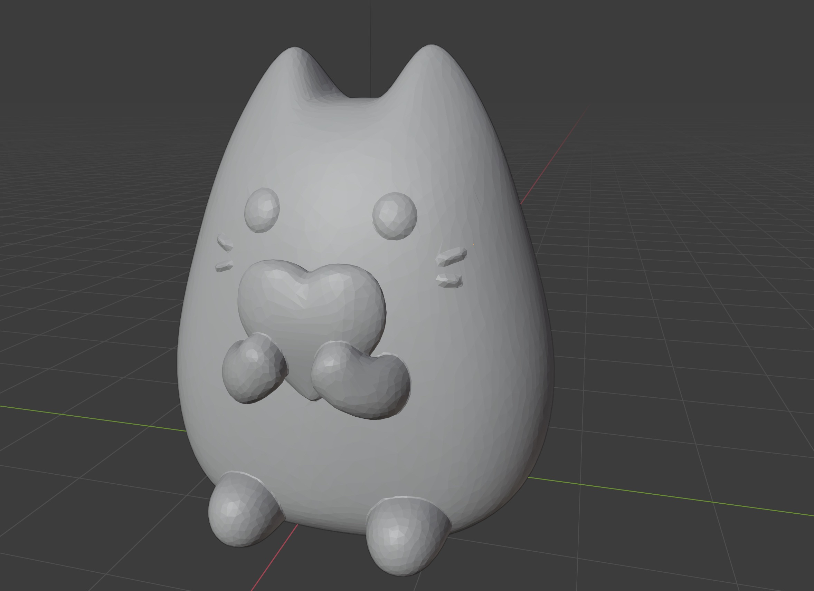
In Fusion 360, I placed the cat in a 7" x 3" x 1.5" trough (0.5" all around) with two sections. I wanted to have different versions of the cats in each section, but Fusion 360 kept crashing (it did not like cats without whiskers?), so I duplicated the one cat that worked instead.
Fusion 360 works sluggishly with .stl files, but thankfully Anthony patiently guided me through troubleshooting and setting up the files for CAM.
- F3d file
- CAM files
- Anthony’s CAM video and documentation
2. Milling
After securing the wax block with a glue gun, attaching and calibrating the end mill, and wearing hearing protection, we were ready to go!
Expectedly, the parallel pass and pencil finishing passes were most helpful for revealing the details on the cat’s features. Since I had two identical cats, I added an additional parallel pass to one of the cats, running 90 degrees.
Final wax mold:
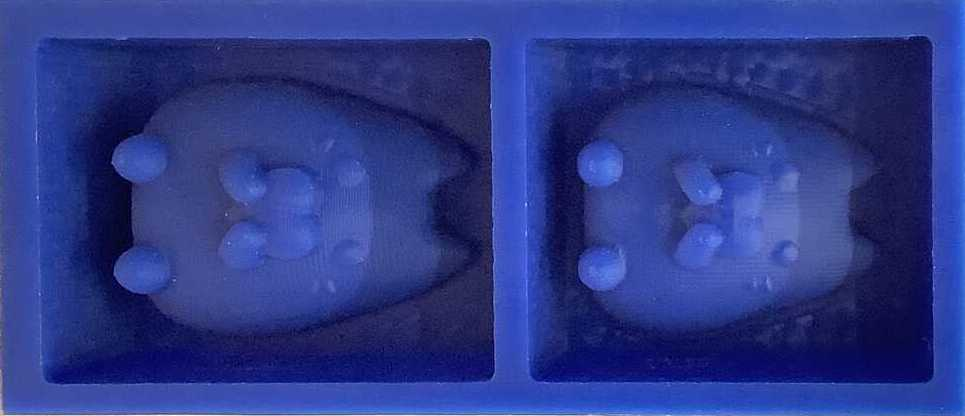 Left: parallel pass in y, Right: parallel pass in x and y
Neither version was as smooth as desired and I wanted to use a heat gun to smooth it out. After a quick experiment, I discovered that I was not able to control the wax melting as much as I would need to achieve a smooth surface on the 3D cat. I will try again when I gather the courage.
For comparison, I created a version of the same mold on the Prusa 3D printer with PLA filament (15% infill).
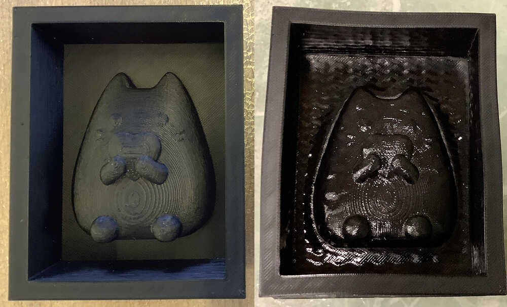 Left: fresh from the printer, Right: post heat gun (striations still present, but shinier. Walls wonky.)
Here they are again after casting the oomoo negatives:
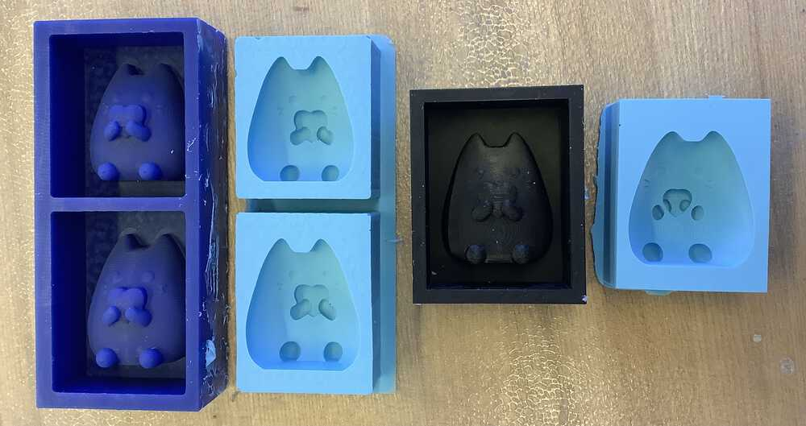
The 3D printed version has overhangs under the arms of the cats. This causes that part of the oomoo mold to rip when removing a cast part.
3. Casting
I was particularly interested in experimenting with mixing colors and textures in the casts.
Dual color dry stone
My first cast in dry stone was not bubble-free, but gave me a good idea about pouring the casting liquid quickly and cleanly. The heart was dry stone that was dyed with Smooth-on SO-Strong colorant. I like how the top of the heart turned out.
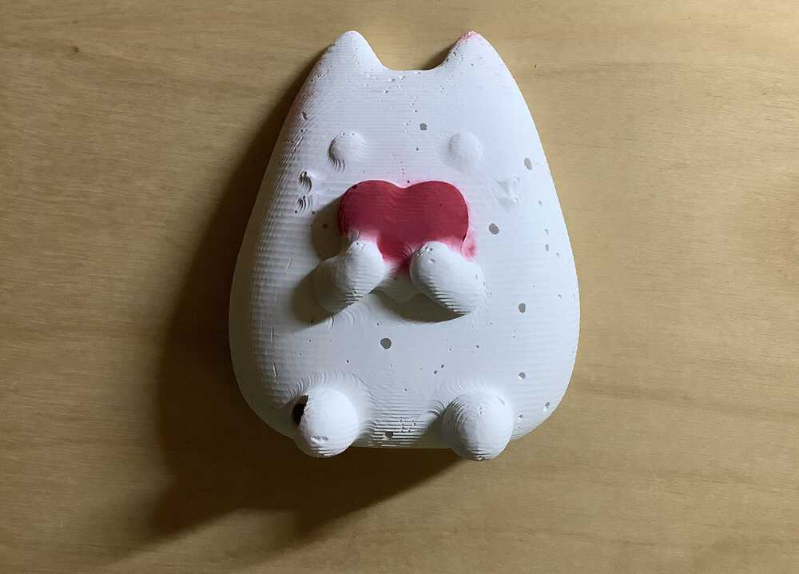
EastCoastResin
Second, I wanted to experiment with clear resin casts.
In the above video I am painting a mold with acrylic pens (they don’t work very well on oomoo, but transfer ok to resin), mixing the resin (using the vacuum chamber to remove bubbles), pouring the resin into the mold with a dropper, and popping surface bubbles with a lighter. I also cut out a piece of reflective film and added it to the back of one of the cats.
The Crystal Clear EastCoastResin.com resin was already yellow when I poured it into the mold.
I also mixed a batch of resin with photochromic purple pigment which turns blue when not exposed to the sun.
Final result:
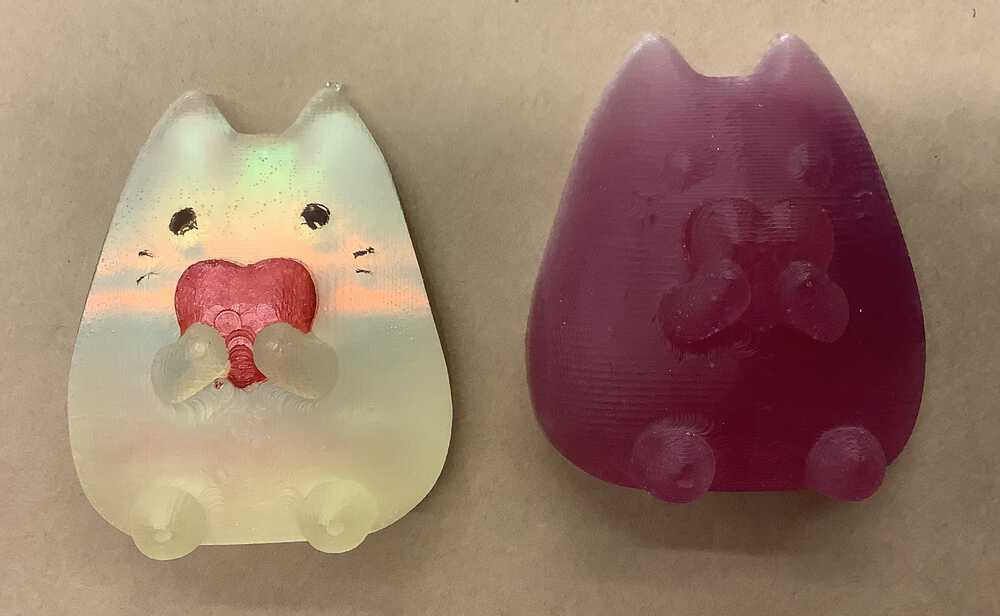
Left: resin + painted mold + reflective film at the back
Right: resin + photochromic pigment
The reflective film was a little curly, and I wasn’t able to straighten it out in the resin. However, I felt like it achieved a nice effect. Several people commented that the cat looked like it was glowing.
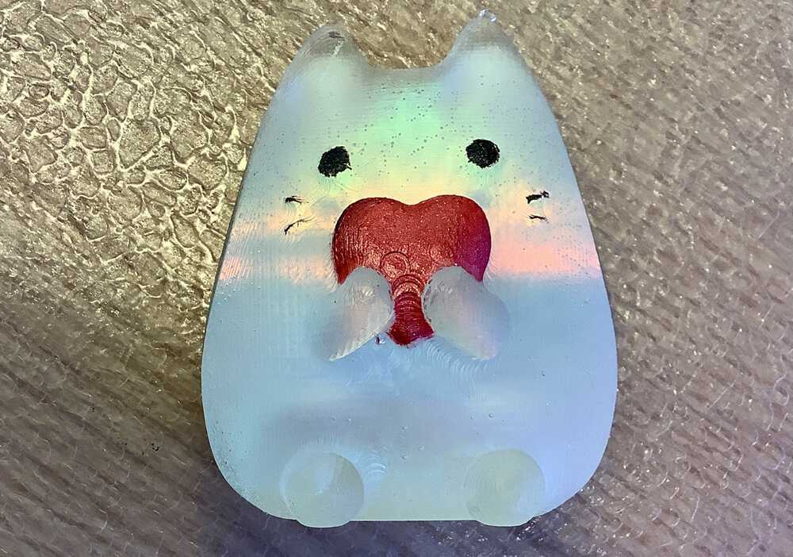
And then there were 3. 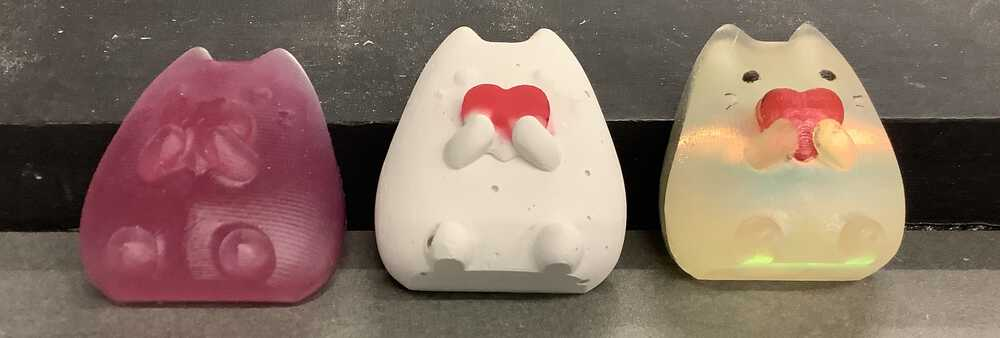
Teexpert resin
Next, I obtained some resin that wasn’t pre-yellowed for more experimentation. I also wanted to cast an LED inside the cat, and realized I could reuse my antenna calculator to create wireless light-up cats.
I used the Roland milling machine to create a PCB cat shape with NFC antenna on one side and reflective film on the other. I initially wanted to vinyl cut the reflective film, but later realized I could mill it altogether (post, I realized this resulted in a lot of trapped dust and that I could cut it out with a scissors with little discernable cut-quality difference).
I was very happy that it works!
While the milling machines were busy, I also experimented with coiling magnet wire in a similar fashion and was pleasantly surprised to find that they also work, albeit less brightly (which makes sense with the messy nature of my manual coil winding))
I continued to play with pigments and styles and embedded my NFC-powered LED into some of the molds. Fine glitter works exceptionally well when cast in layers with the clear epoxy resin.
I created my cat family so I can live out my cat lady dreams.
As aforementioned, the cats picked up striations left behind by the milling process. I wanted to see if I could smooth this out with a final resin “glaze”.
Thanks Dave for the video!
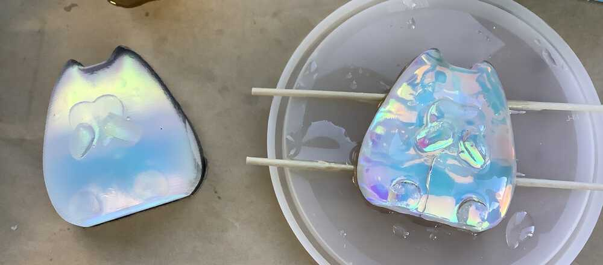 Left: before glazing (with black resin backing), right: after glazing
This “glazing” process seems to work quite well! One tricky issue however was not having a place to hold the piece while the epoxy cured. I did not want them to become fused to the wooden sticks, so I put them on top of their oomoo molds. This resulted in some resin pooling, and may have led to some passers-by assuming they were done curing and handling them, thus disrupting the cure. In the future, I would create a 3D printed mold for a spiky oomoo mat to hold my prints, and store them in a box to avoid disruption.
The cats are now curing under more coats of resin… Hopefully they will look okay by class time!
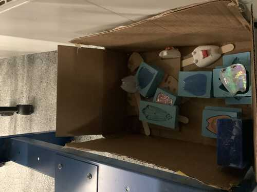
Wednesday 12.45pm update!
HUUUUGE thanks to Anthony and Harrison for helping me to bring my cat family to E14 from the lab ❤️
The top glaze looks great, but the resin seeped below the cats, causing the bottom to become lumpy. Maybe a cat shaped platform made from oomoo could have prevented this.
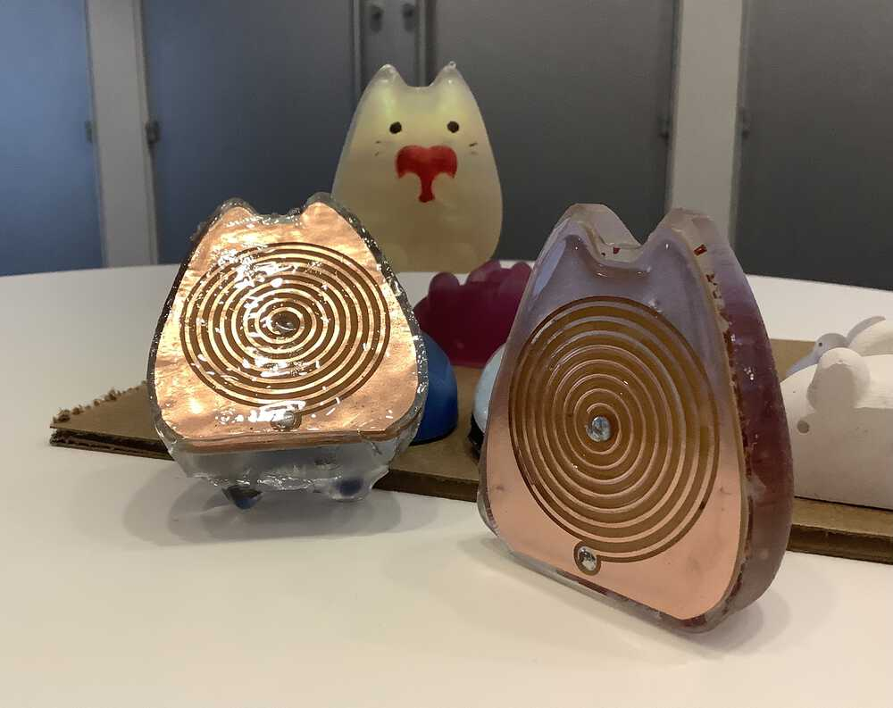 Left: bottom of cat after attempting to glaze top, right: less lumpy without top glaze
Updated cat family: 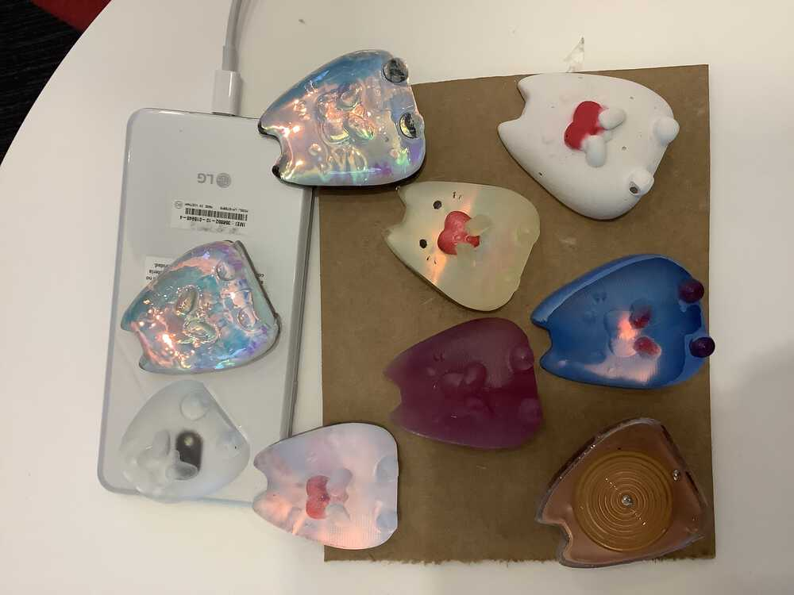
Reflections / improvements for future.
- For casting resin, plan carefully, laying out exactly the tools you need beforehand. Double glove to prevent touching other belongings with resin-y gloves. Some things can be cleaned with acetone, but other things will get ruined.
- DON’T cast in a hurry, especially resin. This ruined several cats. Actually broke my heart 💔
- Be patient with layering. Resin takes 24 - 48 hours to cure, and rushing ruins it 💔💔
- Glitter sinks in resin
- Be careful with where you leave resin curing to avoid dust, fingerprints, and vibrations.
- Lay more than one sheet of paper on the casting surface. Resin will seep through paper (semi-cured resin can be cleaned with acetone)